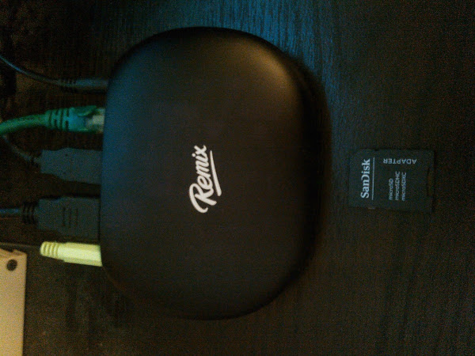

December 17, 2016
So I’m late to the game on the Remix Mini PC; which is basically a phone that a monitor, keyboard and mouse get plugged into. [edit] I’ve also updated this blog post. One reason is I’ve been using it exclusively in the living room. Also, Jide announced they are exiting the consumer market. [/edit] I bought one a bit back because it was on sale and I figured why not. When something is under $50, I don’t need to check in with the better half. :-) So I’m just getting around to setting it up and using it over the past few weeks.
First things first… Lets take a look at the device.

Physically, it is small. Almost as much as the Raspberry Pi. Its a bit lower then my Raspberry Pi 2 in its case, but also wider and deeper. You can compare the Mini with the SD card in the image.
The model I bought has 16GB eMMC storage and 2GB of RAM; the processor is 1.2GHz quad-core cortex A53 (64-bit) Allwinner. No site of information for the video processor. There is a MicroSD slot for up to 32GB (sorta) more storage; read below.
It has both a 10⁄100 BASE-T Ethernet port and 802.11b/g/n Wi-Fi card built in. Both are reasonable if a bit slow these days. Perfectly adequate for what I did below.
There are only 2 x USB 2.0 ports. Which might be limiting if the Remix Mini PC was used for more then regular simple tasks. I did hook up a powered USB hub; which gave me one more port on the Remix Mini and a bunch more on the hub. More details below.
I’ve never liked the “good, bad and ugly” type reviews. So to cut to the chase, after using it for a number of evenings and weekends, it isn’t that bad of device for simple tasks. Though I use it almost exclusively in the living room now, I do have some critiques about making it a media player. Basically latest version of the OS solved most of the issues. The version I have works as a media player, but the 1GB version probably would be a bit “laggy” as the kids say.
In the end, If you want a cheap, secondary machine for non-power-user type tasks, then this isn’t a bad choice. Now what are those simple things? Well, I’ll tell you what I did and my impression of them.
Blogging
I’ve got the Remix Mini PC hooked up to a monitor that does 1080, and apps can be either full screen or windowed. And Jide did a lot to make Android work as a desktop. But many apps are still the mobile interface. What is he dancing around do you ask? Well, I don’t like the mobile app for Blogger on the phone, nor the tablet, and now, not on the Remix Mini PC as well. In fact I really tried to write this review on the Remix Mini PX, but needed to switch to my trusty Lenovo T420s running Kubuntu. :-)
Documents, Spreadsheets, Etc.
Now regular document work on the other hand is a bit the opposite in impressions. Especially if you are a big Google Drive/Docs/Sheets/Slides user as I am. Doing stuff shouldn’t be too bad. Writing the simple letters or updating the home budget are fine. I’m not sure I’d want to make a complicated Spreadsheet in the mobile app though. You are literally working in the same simplified interface of mobile apps but with the screen size of a full monitor.
If you’ve set up Google Cloud Printing, then printing is a non-issue as well. Honestly, I did not move the printer around the home office to see if it prints native-ly. I really doubt that it would work. But there are Cloud Ready printers out there if you want a printer not hooked up to any other device in the house. Or you can read “How to Turn a Raspberry Pi into a Google Cloud Print Server”.
Browsing
Are all browsers equal? Well I won’t “answer” that question. Seems more like a preference or a “your mileage my vary” type debate. But I did try both Google Chrome and Firefox. Page rendering works much the same as on mobile, which means that words and pictures are huge on the 1080 monitor. Some sites did give me a version that was adjusted for the large screen. I’d rather not get into a technical explanations, so I’ll say that was nice of the web-developers to recognize that mobile browsers do vary in size. :-)
One could also request the desktop site, but YMMV again per site. It is the same on a tablet for the few I tested, but many don’t like the mobile interface. And those are equally likely to get confused about a mobile browser asking for the desktop site, but using a keyboard and mouse to interact as if it was touch. Remix OS does a great job, but you could easily guess it can get a bit twisted…
File Manager And External Media
The file manager is somewhat rudimentary, but that’s not unexpected. I could move, rename, copy, cut, paste files. There is also a list of “Bookmarks” that are the typical Documents, Pictures, etc. These folders are right off of “My Remix”, or the root of the drive. Its nice you can turn the Bookmarks on and off in settings, but its a shame they call it “My Favorites” in settings.
Related, I hooked up an external USB HD, which is formatted EXT4. It mounted no problem, and I could access all the folders. I could view or work with the files on there, though the Remix Mini PC did not have many default viewers beyond the typical pictures, movies, etc. You’ll have to hunt them up on the Google Play Store. And if you’re interested in the media player idea, everything on the USB HD played fine; music, pictures and videos (thanks to good ‘ole reliable VLC and Kodi, see below). [edit] MPG movies will sometimes have the audio fall out of sync. Again a technical discussion, but I’m in the process of converting everything to MP4 anyways. [/edit]
There is another issue related to using a MicroSD card. It shows up in the file manager, and many apps let you save to it. But the draw back with how Jide mounts it is that many other apps can’t use it. There are also quite a few apps that let you download data, but only to internal storage or the “/sdcard/” path. The inserted MicroSD card does not get mounted at that location like it does on many phones. It can be as frustrating as the first Nook Color tablet I bought many years ago. It had a slot for a MicroSD card, but I could not put books nor music on the MicroSD card. I was limited to like 4 GB of space on the Nook and about 12GB on the Remix. I can still use that 12 GB of internal space for syncing music, movies, etc. And then the 32 GB external for other docs, personal videos, etc. But that doesn’t work for my situation.
Listening to Music
I’m a big fan of Google Play Music. Mostly because I’ve put my whole CD collection up on Google Play Music and sync playlists across my phone, tablet, etc. And now the Remix Mini PC is one of the devices. It can’t store my whole collection, but none of my other android devices can either. Especially since my phone doesn’t have a MicroSD card slot. But I digress again… It streams perfectly well and I can sync my favorite songs to it for when the Internet (ah-hem, Comcast) goes down.
One item of note, this is where the low-horsepower of the Remix Mini PC shows. I often swap back and forth between editing a document and being in Chrome. That is no problem. Also, playing music and swapping to another app is no problem. Put when adding the playing music, swapping between Chrome, Docs and the occasional Hangouts message…? Well things are tolerable, but sluggish. After a while I did long for my laptop again. This, BTW, is only a concern if one is trying to work on it like it was a desktop device. Single focus or as a TV device, this issue isn’t really a problem.
Videos And Movies
The second to last major topic. And with watching videos I use a number of sources. They are Netflix, YouTube, Google Play Movies and Kodi. Netflix is my go to place for video consumption (I’m thankfully avoiding cable), and what I’ve watched has played well.
I get “free” movies (and books) from Google Play by using Google Rewards. And I just “bought” season 11 of Red Dwarf (do I pass my geek test?). Once again, it played quite well.
Next is YouTube; guess what? Everything I tried played well. If I force things to hi-def, there is a bit a performance impact though. It is ironic that on a 1080 screen I can’t play 1080 videos. I suppose the other two options so far (Netflix and Google Play) might not have played in 1080. I haven’t gone back to check.
The last is Kodi, which I use to play my collection of home movies. I’ll admit my collection isn’t as wide as some. But again, everything I played worked. [edit] MPG movies will sometimes have the audio fall out of sync. Again a technical discussion, but I’m in the process of converting everything to MP4 anyways. [/edit]
If you want a media center, it’ll work. But be careful about how you control it. Which leads to….
Joysticks And Keyboards
I’m not a big gamer. That’s why there is no real “gaming” section. But the few that I do play worked okay with a wired XBox 360 joystick. The same one that everyone recommends when gaming with Steam on Linux. There are a few “weirdnesses” which is more linked to the game being touch oriented. Jide did a good job working the mouse and joystick into those types of interfaces; but its not perfect.
The joystick for other apps? Well, I probably should have mentioned “TV Mode” earlier, but it wasn’t really worth it. I just puts all your apps up on the screen and you can scroll through them. That is nice, but not enough. I tried using the joystick in:
- Kodi - those guys are great, using the joystick is great
- Netflix - not bad, could move around and close Netflix well enough.
- Google Play Movies - eh, not great. hard to see what is selected, hard to do control anything except when playing a movie or TV show.
- Google Play Music - similar and in many ways worse; can’t get to your Music Library to get to artists or playlists.
And since I have no remote, IR or bluetooth, I tried this cheap FAV1 Bluetooth wireless keyboard/track pad that I keep around. No comment on the FAV1, but it was easy to connect to the Remix Mini and I could do most things on it. Doing the two-finger touch scroll on the track pad was sometimes awkward. Especially trying to maneuver around in Netflix. But it did work. [/edit] The FAV1 died, not unexpected. I bought a Logitech K400+ and moved the Remix to the living room. The apps mentioned getting updated along with a new keyboard now make the experience quite workable. [/edit]
Conclusion
To put it simply, was it worth what I paid? Definitely; I had fun playing with it and it is the main media device in the living room now. Would it be worth the $70 that Jide charges? Well, I think that is a personal choice. I probably would have made it, but that’s because I like trying new things. :-)
One last comment. They’ve come out with a set of new devices, the Remix IO and Remix IO+. They’ve always had create interaction with their users. And they’ve fixed many things in Remix OS along with the way. So after I recoup from holiday spending, I just might get one of the Remix IO’s… [edit] Jide announced they are exiting the consumer market. [/edit]